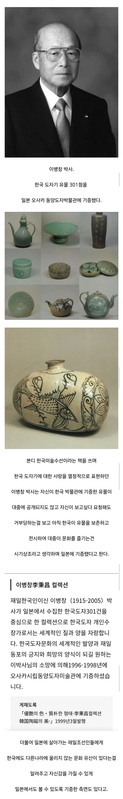

한국산 도자기 중 좀 이쁜놈들이 일본에 있는 이유
댓글
거짓말하지마,
아, 그냥 내가 알아서 한다고! 하면서 방문닫고 들어간거 밖에 없잖아!
결과적으로 게으르고 좆같이 사는중인가봄?
이정도면 뇌가 없는 수준 아님? 진짜 모름
부모 하나 상대로도 계속 설명을 해야만 하는 삶이란 어떤 삶일까.
https://www.dogdrip.net/253678370
왜냐면 실제로 저때만 하더라도 대한민국 관리체계가 병신상태가 맞았거든
우리나라 박물관에 기증했다 일평생 모은것들이 거의 다 사라져버린 사례도 있지
희귀우표랑 히틀러 관련이였던가?
청주어린이회관 ㅎㄷㄷ 보면 참담함
한국에서 기부, 기증 이딴거 하면 안됨 ㅋㅋ
카데바 기증조차도 인간장난감 취급받고 쓰레기통행되는게 뉴스에 나왔는데
아직도 시기상조인거같습니다
기증한 사람에게 홀대하는건 바뀌어야한다.
어차피 안 줄 돈이라면 지들이 그렇게 잘하는 의전이나 명예훈장 수여라도 해줘야지..
홀대하는 거면 다행이고... 진짜 못 보여주는 것일 수도 있어. 없어졌거나 빼돌려서.
헐..
공무원이 수장품 빼돌리던 시대임.
솔직히 뭐 뒤로 감기는때도 많았지않나..
애시당초 조선시대 도자기장인도...
그래도 요즘 국중박 가보면 기증관 엄청 잘해놨음
좋아지고 있는 중
'한국박물관에 기증한 도자기를 대중에 공개하지도 않고 기증자가 보여달라고 해도 보여주지 않아' <- 이부분만 읽어도 한국박물관에 기증하면 그냥 호구잡히는거임 ㅇㅇ
근데 사실 저분 살아계실때 우리나라 모든 분야가 허접하고 취약했던건 사실이라서 제대로 보존시키는게
목적이라면 저렇게 하시는게 최선이었을수도
오죽했으면 그랬겠어
최근 사례들봐도 딱히 바뀐건없음
천박함이 국가전반에 흐르는 기조라
젠장 ㅈ본 어째서 남의나라 유물을 그렇게까지 아끼는거냐
“우리도 백제의 후손이니깐”
크 대인
나름의 이유가
착한 기증 ㅇㅈ 합니다.
저때 기증했으면 높으신양반들 안방에서 전시됐을듯 ㅋㅋ
그게 아니라고 저 페이지 내내 설명함